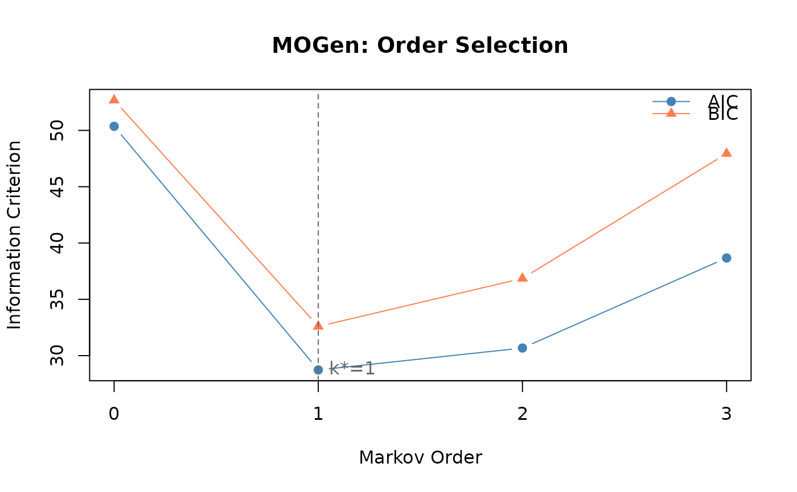

build_mogen() fits Markov chains of every order from 0 to max_order
to a set of sequences and selects the order that best balances fit
against the number of parameters, by AIC, BIC or likelihood-ratio tests.
At order k the chain is a De Bruijn graph: its nodes are the k-tuples of
consecutive states seen in the data, and an edge joins two tuples that
overlap in k - 1 states, so each edge is an observed path of k + 1
states. Order 0 is the marginal distribution of the states. It is the
multi-order model of Scholtes (2017), and takes wide sequence data, a
list of state vectors, a tna model or a network built from sequences.
The selected order is the number of earlier states the next state
depends on, as far as the sample can show. The number of parameters
grows quickly with the order (summary() lists them per order), so few
or short sequences favour low orders, and AIC and BIC can disagree:
print() shows both. Before reading a higher-order transition, check how
often its context was observed with mogen_transitions();
markov_order_test() tests the order against a permutation null, and
path_dependence() shows which contexts carry the extra information.
Arguments
- data
The sequences: a data frame with one row per trajectory and one column per time point, a character matrix laid out the same way, a list of state vectors (one per trajectory), a
tnamodel (its integer states are decoded to their labels) or anetobjectbuilt from sequences (its states are read as stored). A data frame needs position columns named as a numbered run (T1,T2, ...); any other frame raises an error of classnestimate_bad_inputthat says to declare the roles inbuild_network()and pass the network. A missing value ends a run of observed states, so each run is its own trajectory, and trajectories with fewer than two states are dropped; with none left,build_mogen()stops. A one-hot network, an association network (cor,pcor,glasso,ising,mgm), anetobject_groupand a 0/1 matrix raise an error of classnestimate_bad_input.- max_order
The highest order fitted, a whole number of at least 1; a value such as
2.7is an error, not truncated. Default5. A value at or above the length of the longest trajectory is lowered to that length minus 1, with a message.- criterion
How the order is selected:
"aic"(default) or"bic"takes the order with the smallest criterion, and"lrt"uses the sequential likelihood-ratio tests described in Details.- lrt_alpha
The significance level of the likelihood-ratio tests, strictly between 0 and 1. Default
0.01. It only affects the selection withcriterion = "lrt"; the p-values are computed under every criterion.- dof
How the parameters of each layer are counted.
"paths"(default) counts every transition of the paths of length k that the observed first-order topology allows, as Scholtes (2017, Eq. 7) and pathpy do."observed"counts only the transitions seen in the data (the rule before Nestimate 0.9.28); that count can fall as the order rises, and it under-penalises high orders on sparse data.- x
- ...
For the
plot()method: further arguments passed tographics::plot(). For theprint()andsummary()methods: ignored.- object
For the
summary()method: anet_mogenobject.- type
For the
plot()method:"ic"(default) draws AIC and BIC against the order;"likelihood"draws the log-likelihood against the order. Both mark the selected order with a dashed line.
Value
A net_mogen object (class c("net_mogen", "cograph_network")).
print() shows the selected order and the AIC and BIC of every order,
with each minimum starred. summary() prints the states and the
selection, then returns, visibly, one row per order as a data frame
(order, layer_dof, cum_dof, loglik, aic, bic, best
("AIC", "BIC" or "AIC+BIC" on the order each criterion picks,
empty elsewhere) and selected ("<--" on the chosen order)).
plot() draws the criteria or the log-likelihood against the order and
returns its input invisibly; print() also returns its input
invisibly. mogen_transitions() gives the transitions of one
order, one row per path, and pathways() the same as character
strings. The object's fields:
- optimal_order
The selected order.
- criterion
The criterion used for the selection.
- orders
The orders fitted, 0 to
max_orderafter any capping.- aic, bic, log_likelihood
Named numeric vectors, one value per order.
- dof
Named numeric vector of the cumulative degrees of freedom of each model.
- layer_dof
Named numeric vector of the degrees of freedom of each layer.
- dof_method
"paths"or"observed".- lrt_p
Named numeric vector: the likelihood-ratio p-value of order k against order k - 1.
- transition_matrices
List of row-stochastic transition matrices (a context never followed by another state keeps a zero row), the first (order 0) held as the named vector of marginal probabilities.
- count_matrices
List of the matching counts, in the same order, the first (order 0) as a named vector of state counts;
mogen_transitions()reads them.- states
The distinct first-order states.
- n_paths
Number of trajectories fitted.
- n_observations
Total number of state observations.
- weights
The transition matrix of the selected order, as the
cograph_networkweight matrix (a 1 x n matrix named"marginal"when the selected order is 0). Its dimnames are internal k-tuple keys (states joined by a non-printing separator), not arrow notation.- nodes
Data frame (
id,label,name) of the nodes of the selected order.- edges
The
cograph_networkedge data frame, with integerfromandtonode indices and a numericweight;mogen_transitions()gives the readable table.- directed
Always
TRUE.- n_nodes, n_edges
Counts for the graph of the selected order.
- meta
The
cograph_networkmetadata list.- node_groups
Always
NULL.
Details
The log-likelihood of the order-k model scores the first state of each
trajectory by the marginal distribution, the j-th state by the order
j - 1 transitions while j <= k, and every later state by the order-k
transitions. The likelihood-ratio test of order k against order k - 1
refers twice the gain in log-likelihood to a chi-square distribution with
the order-k layer's degrees of freedom; its p-value is NA for order 0
and where the statistic or the degrees of freedom are not positive. With
criterion = "lrt" the selected order is the largest k whose test
rejects at lrt_alpha (Scholtes 2017), or 0 when none does. Every
p-value is kept in the result, so a non-monotone run of tests is visible.
The model is the one pathpy 2 calls MultiOrderModel. It is not the
multi-order generative model of Gote et al. (2023), which adds start and
end states and selects by AIC only; the function name is kept for
compatibility.
References
Scholtes, I. (2017). When is a Network a Network? Multi-Order Graphical Model Selection in Pathways and Temporal Networks. KDD 2017.
Gote, C., Casiraghi, G., Schweitzer, F., & Scholtes, I. (2023). Predicting variable-length paths in networked systems using multi-order generative models. Applied Network Science, 8, 68.
Examples
seqs <- list(c("A","B","C","D"), c("A","B","C","A"), c("B","C","D","A"))
mg <- build_mogen(seqs, max_order = 2)
# \donttest{
trajs <- list(c("A","B","C","D"), c("A","B","D","C"),
c("B","C","D","A"), c("C","D","A","B"))
m <- build_mogen(trajs, max_order = 3)
print(m)
#> Multi-Order Generative Model (MOGen)
#> Optimal order: 1 (by aic)
#> Orders tested: 0 to 3
#> States: 4
#> Paths: 4 (16 observations)
#> AIC: 50.4 | 28.7* | 30.7 | 38.7
#> BIC: 52.7 | 32.6* | 36.9 | 47.9
#> (* = minimum; AIC and BIC agree on order 1)
plot(m)

# }